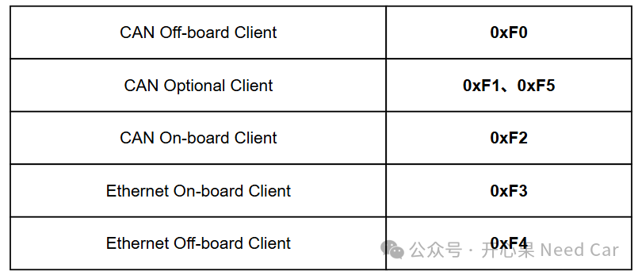
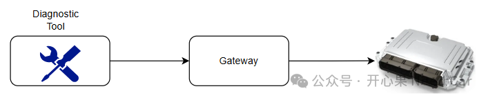
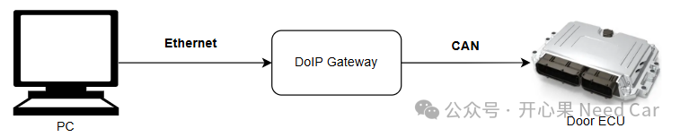

开心果 Need Car · 2026-09-14T06:21:00+08:00 · 微信原文
在汽车电子诊断开发过程中，经常会看到类似如下的诊断源地址（Diagnostic Source Address）分配规则示意如下：

很多工程师第一次接触UDS（Unified Diagnostic Services）时都会产生一个疑问：ECU最终只需要接收诊断请求并返回响应，为什么还要定义这么多诊断地址？
事实上，这些地址存在的目的并不是为了实现通信，而是为了让ECU和Gateway能够识别请求来源，从而实现权限管理、会话管理、安全控制以及多客户端并发访问等功能。
1.什么是诊断地址？
在UDS诊断通信中，每个请求都包含两个重要信息：Source Address（源地址）和Target Address（目标地址）。其中：Source Address = 请求来自谁，Target Address = 请求发给谁。
例如：F0 → 10，表示：诊断仪(0xF0)向ECU(地址为0x10)发送诊断请求。
因此，诊断地址本质上是诊断客户端的身份标识。可以把它理解为公司的员工工号。
员工A = 1001 员工B = 1002 员工C = 1003 |
虽然大家都能发送邮件，但系统必须知道是谁发送的邮件。汽车诊断也是同样的道理。
2.F0~F5分别代表什么？
比如：
F0 = CAN外部诊断客户端 F1 = CAN备用诊断客户端 F2 = CAN车内客户端 F3 = Ethernet车内客户端 F4 = Ethernet外部诊断客户端 F5 = CAN备用诊断客户端 |
通常可以理解为：
F0是最常见的外部诊断工具地址。例如：CANoe、CANalyzer、售后诊断仪等，都可以使用F0作为源地址。
F1、F5是备用诊断客户端地址。主要用于：多诊断仪并行测试、自动化测试系统、制造测试工装、特殊开发环境等。
F2是车内CAN客户端地址。例如：Gateway、TCU、BCM、Domain Controller等，向其他ECU发起诊断请求时可以使用F2。
F3是车内Ethernet客户端地址。例如：中央计算平台、域控制器、高性能计算单元等，通过车载以太网发起诊断请求时使用。
F4是通过DoIP接入的外部诊断仪地址。例如：PC ->Ethernet ->DoIP Gateway ->Vehicle，这种场景下诊断工具通常以F4身份访问车辆。
3.为什么需要区分车内和车外客户端？
假设存在以下场景：CANoe -> Gateway -> ECU
同时： TCU -> Gateway -> ECU
对于ECU来说，两者都属于诊断请求。但含义完全不同。例如：
F0 → 外部维修工具 F2 → 车内控制器 |
ECU收到请求后就能够准确判断：
这是维修人员发起的请求 还是车内模块发起的请求 |
从而执行不同策略。
4. 实现安全权限管理
现代车辆普遍支持：0x10 Session Control、0x27 Security Access等UDS服务。不同客户端可能拥有不同权限。例如：
F0允许进入Programming Session，允许刷写软件，允许执行开发功能。而：F2只允许读取数据，禁止软件刷写。这样即使某个车内ECU被异常访问，也无法获得与正式诊断设备相同的权限。因此诊断地址实际上也是安全架构的一部分。
（一）支持多个Tester同时工作
开发阶段经常会出现多个诊断工具同时连接车辆：CANoe、自动化测试平台如果全部使用F0，那么ECU只能看到一个客户端。容易产生：会话冲突、安全种子冲突、响应路由错误、刷写控制异常等问题。因此项目允许使用：F0，F1作为不同客户端地址。
例如：CANoe → F0，Test Bench → F1。这样ECU能够准确区分多个诊断连接。
5.Gateway为什么需要这些地址？
现代整车架构中，大多数诊断请求都需要经过Gateway路由。示意如下：

Gateway需要管理：
谁建立了诊断会话
谁获取了安全权限
谁正在执行刷写
谁发送了DTC清除命令等。
如果所有请求都来自同一个地址F0，Gateway将无法识别不同客户端。而有了F0~F5这样的身份标识后，就能够同时管理多条诊断连接。
6.CAN节点是否需要支持Ethernet诊断地址？
这是项目开发中经常遇到的问题。很多人认为：我是CAN ECU，因此：只需要支持F0、F1、F2、F5。实际上并不一定。
例如：

虽然Door ECU本身是CAN节点，但请求来源实际上是：F4，即：Ethernet外部诊断客户端。因此，Gateway转发后：F4 → Door ECU。Door ECU收到的源地址仍然是F4。因此是否支持F4、F3，与ECU是不是CAN节点并没有直接关系，而取决于：OEM是否要求支持DoIP转发诊断。
如果需要响应DoIP Gateway转发的请求，那么即使是纯CAN ECU，也可能需要识别Ethernet客户端地址。
总结
F0~F5并不是简单的数字定义，而是诊断客户端的身份标识。通过这些地址，ECU和Gateway能够识别诊断请求来源，并实现：
区分车内与车外客户端
安全权限控制
多Tester并发访问
Gateway会话管理
CAN与DoIP来源识别
故障分析与日志追踪
因此，对于现代汽车诊断系统来说，诊断地址的价值不在于“通信能否完成”，而在于“系统能够识别是谁在通信”。这也是为什么即使是一个普通CAN ECU，在支持DoIP架构的整车项目中，也可能需要识别和处理来自F3、F4等Ethernet客户端的诊断请求。
往期精彩回顾